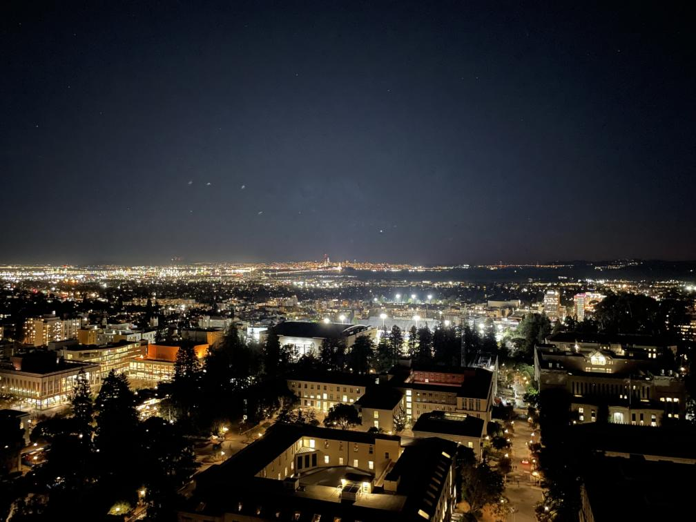
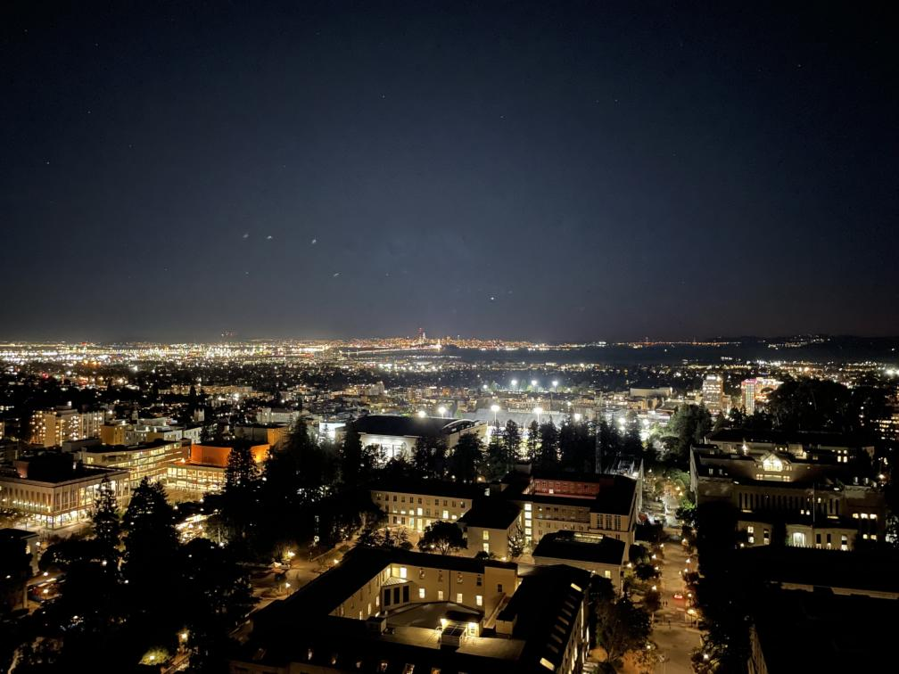
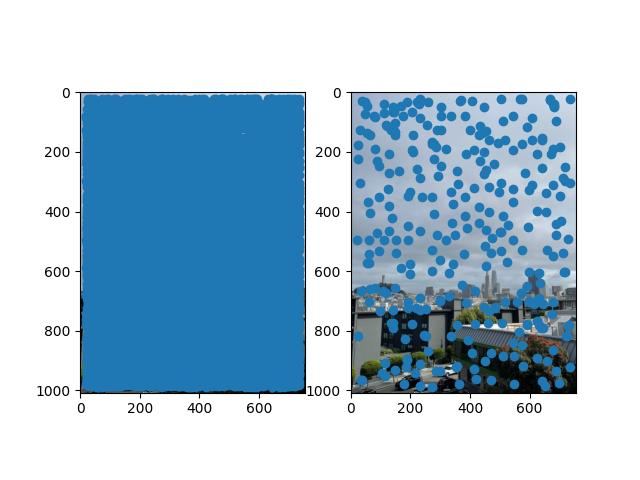
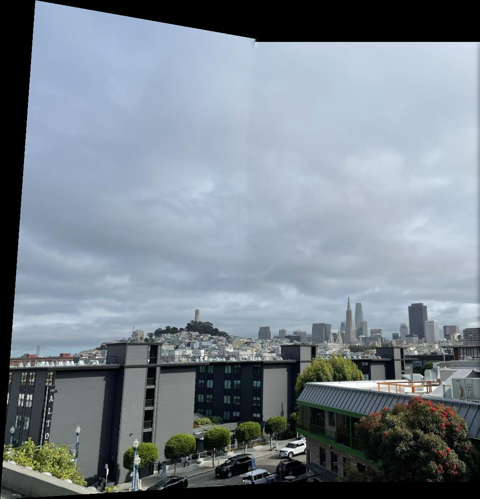
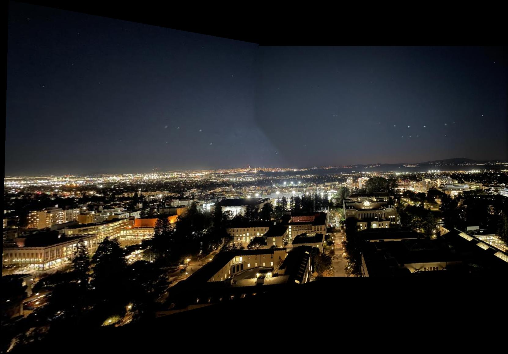

Taking Pictures
Approach
Went around the Bay to take some picture.
Results
Pictures for Rectification
 |
SF Skyline
Bay Area Sunset
Bay Area Nighttime
|  |
Went around the Bay to take some picture.
| |
|  |
The mathematics behind the image warping that is done in this project can be described with a linear transformation called a Homography or a perspective transform. The idea is that there exists a matrix which can project the pixels of an image onto the plane of perspective of another image. This allows us to see an image from a different perspective without having to retake the image.
The Homography matrix is defined as: \[ \begin{bmatrix} a & b & c \\ d & e & f \\ g & h & 1 \end{bmatrix} \begin{bmatrix} x \\ y \\ 1 \end{bmatrix} = \begin{bmatrix} wx' \\ wy' \\ w \end{bmatrix} \] Namely, is is first necessary to convert the pixel indices/coordiantes into the Barycentric coordiantes by extending them to the third dimension and appending a one as the third entry. Then, if we map a pixel through \(H\), we get the corresponding pixels's indices/coordinates in the projected plane, weighted by some constant. If we divide through by the third entry and keep only the first two, we obtain the projected coordinates.
In this case, we don't know \(H\) but we do know the pixel values. This means that we can apply Least Squares to obtain the unknown coefficients in \(H\). This can be formulated as follows: \[ \begin{align*} &\begin{cases} ax + by + c = wx' \\ dx + ey + f = wy' \\ gx + hy + 1 = w \end{cases} \\ \implies &\begin{cases} ax + by + c = (gx + hy + 1) x' \\ dx + ey + f = (gx + hy + 1) y' \end{cases} \\ \implies &\begin{cases} ax + by + c - gxx' - hyx' = x' \\ dx + ey + f - gxy' - hyy' = y' \end{cases} \\ \implies &\begin{bmatrix} x & y & 1 & 0 & 0 & 0 & -xx' & -yx' \\ 0 & 0 & 0 & x & y & 1 & -xy' & -yy' \\ \end{bmatrix} \begin{bmatrix} a \\ b \\ c \\ d \\ e \\ f \\ g \\ h \end{bmatrix} = \begin{bmatrix} x' \\ y' \end{bmatrix} \end{align*} \] If we repeat this process for three other pixels, we will have the necessary eight equations to solve for the eight unknowns of \(H\). Thus, we need to choose which pixels should define our Homography. This can be done by choosing specific features on the image that will be warped/projected and matching them to desired projected pixels. This part also uses this very useful website again to choose these correspondence points.
Once we have computed \(H\) for an image, we need to warp/project all of the pixels of that image onto the desired plane. We do this by following a very similar procedure to the one done in the previous project. However, it is not necessary to perform any triangulation for this project. Here is an overview of the procedure that I implemented:
The key in all of this is that you have to use the un-shifted version of the polygon region to obtain the corresponding sampling points in the original image. But use the shifted version of the polygon region to map into the new warped image.
Using the selected correspondences, I warp the image into a rectangle in the middle of the projected image. I compute the Homography \(H\) using these correspondences and compute the warp as described above. This procedure yielded the following results.
| Original Image | Rectified |
|---|---|
| |
|
 |
In this part, we take two images. Keep one fixed and project the other onto the perspective plane of that image. Put the two images and blend them together to create a mosaic. Below is the procedure that I implemented:
Note that for the picture of the Boeing 777, I changed the center of projection when I took the pictures. This means that the alignment between the two pictures is severely affected.
| San Francisco Skyline |
|---|
| The Bay Sunset |
| The Bay Nighttime |
| Fleet Week (not the best) |
In this part, we want to find points of interest which we can use as features to automatically build the correspondences between images in a mosaic. These points of interest are called Harris corners. Using the provided starter code, the Harris corners along with their scores are calculated. Then, the ANMS algorithm allows us to suppress the vast majority of the Harris corners while maintaining a good distribution of them across the image. This is where we use the equation in the paper which introduced ANMS. The paper is titled “Multi-Image Matching using Multi-Scale Oriented Patches". \[ r_i = \min_j |x_i - x_j| \,\,\, \text{ s.t. } \,\,\, h(x_i) < c_{\text{robust}} h(x_j) \] Compute this for all corners \(x_i\). Then, return a desired number of best corners (I chose to return the best 300 and I also set \(c_{\text{robust}} = 0.9\)), where a corner is best if it didn't get suppressed by other corners. This ensures that the Harris corners don't clump up and are distributed evenly across the picture.
The images on the left include all of the Harris corners while the images on the right include the corners after ANMS.
|  |
Now that we have the points of interest, we want to extract the feature that makes this point interesting. By doing this, we can reference the same features across images even if the exact pixel values are not the same. This is done by taking a 40 by 40 window from the original image centered at each ANMS corner and resizing this window to be 8 by 8. Finally, demean and divide by the standard deviation to normalize the feature. This blurs the pixel values and allows us to compare features across images.
Some of the features extracted as mentioned above. Note that these are not the normalized features.
 |
Now that we have the features for the images of the mosaic and the list of the corners from ANMS, we want to put everything together to obtain the matches for the corners. This is performed with Lowe's trick.
For each of the images below, you can see the matched corners after ANMS for both images.
Now that we have matched corners, we want to select the combination of 4 corners which will yield the most accurate homography.
 |
With these correspondence points, compute the mosaic as was done in Project 4A.
Comparing the manual (left) and auto (right) correspondence points. Note, the B777 mosaic is much better now, compared to when I manually picked the correspondence points.
| San Francisco Skyline - Manual | San Francisco Skyline - Auto |
|---|---|
|  | |
| The Bay Sunset - Manual | The Bay Sunset - Auto |
| The Bay Nighttime - Manual | The Bay Nighttime - Auto |
|  | |
| Fleet Week - Manual | Fleet Week - Auto |
I think that the entire formulation on how to find good features and match correspondences is an interesting solution to a difficult problem. I think that the feature matching is one of the more interesting parts of the project; especially the use of Lowe's trick to solve the problem. It is also cool to see that the B777 picture now lines up pretty well even if I didn't employ the best picture taking techniques.